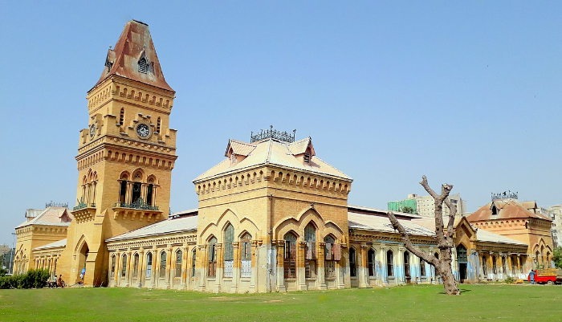

Port Grand, situated in the heart of Karachi, is a waterfront
promenade and entertainment complex that seamlessly blends history with contemporary leisure. Nestled along the
shores of the Arabian Sea, this iconic destination serves as a cultural and recreational hub, rejuvenating the
city's historic Native Jetty Bridge. Boasting a vibrant amalgamation of restaurants, cafes, and shops, Port
Grand offers a diverse culinary experience against the backdrop of the bustling Karachi Port. Visitors can
stroll along the promenade, enjoy the sea breeze, and savor a wide array of local and international cuisines.
The architectural charm of the restored heritage buildings and the lively atmosphere make Port Grand a favored
spot for both locals and tourists, providing a unique blend of maritime heritage and modern entertainment.
Empress Market

Nestled in the heart of Karachi, Empress
Market stands as an enduring symbol of the city's historical and cultural richness. Established during the
British colonial era, this bustling market has witnessed the ebb and flow of time, yet it continues to thrive as
a vibrant center of commerce and community. The market's architecture, a blend of Victorian and Gothic styles,
adds a touch of old-world charm to the bustling atmosphere. Inside, a kaleidoscope of sights and sounds unfolds,
with vendors hawking an eclectic array of goods, from spices and textiles to fresh produce and handicrafts.
Empress Market is not merely a marketplace; it's a sensory journey that encapsulates the essence of Karachi,
inviting locals and visitors alike to immerse themselves in its lively tapestry of colors, scents, and the
ceaseless hum of daily life.
.jpg)